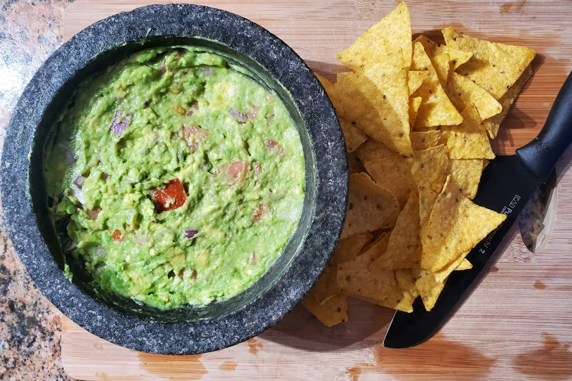

Volver al inicio
Guacamole

Foto de Zoshua Colah en Unsplash.
Descripción
El guacamole es una preparación fresca de aguacate triturado con limón, cebolla y cilantro. Se puede servir como acompañamiento o con chips de tortilla.
Ingredientes
- 2 aguacates maduros
- 1 cucharada de jugo de limón
- 1/4 de cebolla pequeña, picada fina
- 1 tomate pequeño, picado
- 1 cucharada de cilantro picado
- Sal y pimienta
- Chips de tortilla para servir (opcional)
Pasos
- Corta los aguacates, retira el carozo y coloca la pulpa en un recipiente.
- Tritura el aguacate con un tenedor hasta lograr la textura que prefieras.
- Agrega el jugo de limón, la cebolla, el tomate y el cilantro.
- Mezcla y sazona con sal y pimienta.
- Prueba, ajusta el limón o la sal si hace falta y sirve fresco.